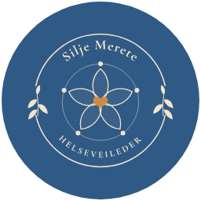
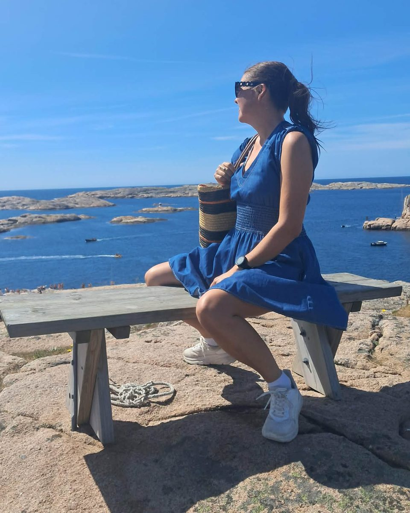
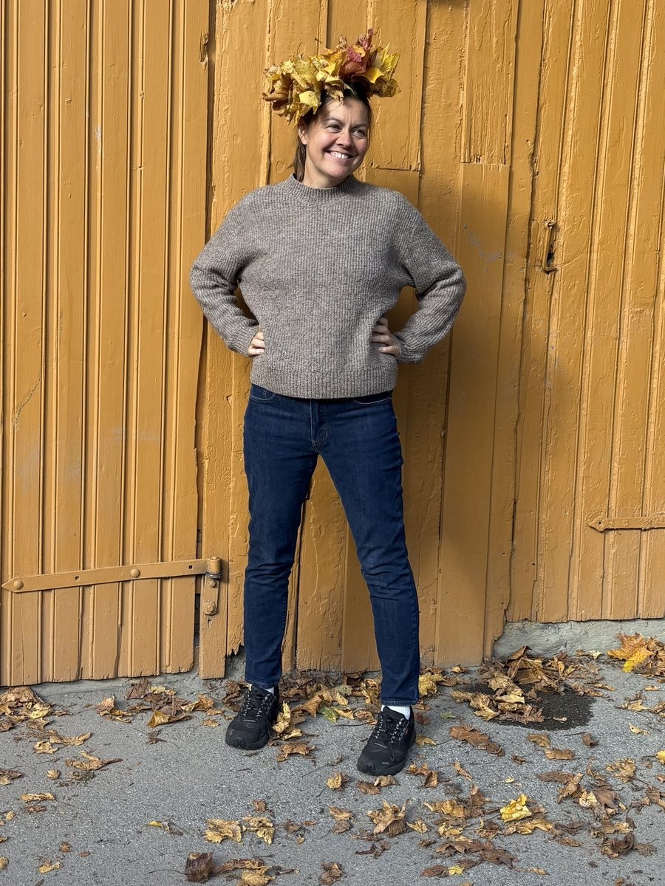
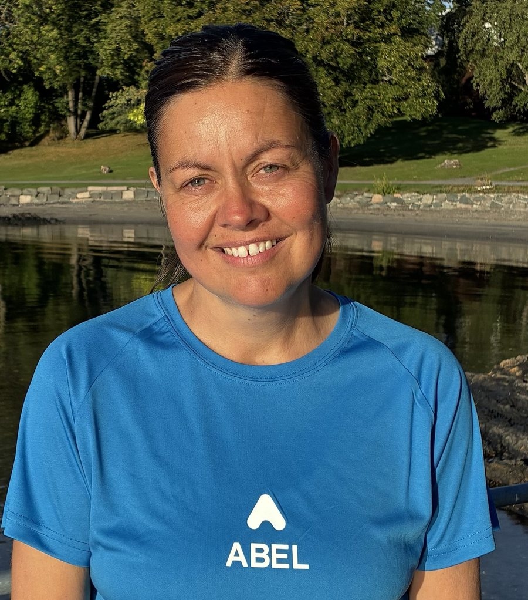

Individuell helseveiledning
Nye plasser fra januar.

Noen ganger trenger vi mer enn gode råd.
Vi vet ofte hva som er «sunt». Det vanskelige er å få det til i en hverdag med jobb, familie, lite søvn og for mye å gjøre. Vi trenger tid til å stoppe opp, forstå hva som faktisk påvirker oss, og finne ut hva som er mulig å gjøre annerledes, innenfor det livet vi faktisk lever.
Dette er et individuelt veiledningsforløp over 12 uker, for deg som ønsker å arbeide med egen helse og egne vaner over tid. Dette er ikke et ferdig program. Vi tar utgangspunkt i deg og hverdagen din: søvn, stress, kosthold, fysisk aktivitet og relasjoner, og det du selv ønsker å endre.
Min anbefaling
Jeg anbefaler at du starter med et forløp på 12 uker i første omgang. Grunnen er enkel: endring tar tid.
En ny vane setter seg ikke på en uke eller to. De første ukene handler ofte om å bli bevisst, prøve ut og justere. Det er gjerne da motivasjonen er høyest, men også da det er lettest å falle tilbake til det gamle. Det er først når noe har fått gjentatt seg en stund, gjennom både gode og travle uker, at det begynner å gå av seg selv.
Forskning tyder på at det i snitt tar rundt to måneder før en ny vane sitter, og for mange tar det lenger. (Lally mfl., 2010)
12 uker gir oss rom til å komme forbi den første ivrige fasen, møte hindrene når de dukker opp, og justere underveis, slik at endringene får tid til å bli dine egne.
Oppfølgingsløpet
Uke 1
Vi blir kjent og kartlegger sammen hvordan hverdagen din ser ut i dag, hva som påvirker deg, og hva du ønsker å få ut av de neste 12 ukene. Sammen finner vi en retning og noen første, realistiske mål.
Hver uke
Første oppfølgingssamtale tar ca. 30 minutter. Deretter har vi faste, korte samtaler der vi ser på hvordan det har gått siden sist, hva som fungerte og hva som var vanskelig, og justerer kursen. Korte samtaler gjør det lett å holde rytmen, også i travle uker.
Innhold
Jeg kommer ikke med en ferdig oppskrift på hvordan livet ditt bør se ut. Vi finner sammen ut hva som kan fungere i ditt liv.

Din framtid skapes av vanene du gjentar, ikke de kortsiktige målene du setter.
Investering
Å sette av 12 uker til egen helse er å si at du er verdt det. Det handler ikke om å gjøre mest mulig, men om å finne ut hva som faktisk betyr noe for deg, og bygge det steg for steg.
I disse ukene setter jeg av tid og oppmerksomhet til å følge deg tett: til å lytte, stille spørsmål, hjelpe deg å se sammenhenger og utfordre når det kan være nyttig. Derfor tar jeg bare inn et begrenset antall personer om gangen.
50 % introduksjonspris
Ordinær pris 1 998 kr per måned
998 kr per måned
Gjelder ut juni 2027
Jeg er i siste fase av utdanningen som helseveileder ved Abel. Fram til sertifiseringen er ferdig får du den samme oppfølgingen og den samme verdien, til halv pris.
Nå har du muligheten til å gi deg selv 12 uker med tett oppfølging, til en pris som ikke kommer igjen. Når sertifiseringen er på plass, går prisen over til ordinær pris.
Vi starter med en kort, uforpliktende samtale. Da blir vi litt kjent, og finner ut om et 12-ukers forløp passer for deg, og om jeg er riktig veileder for det du ønsker å jobbe med.
Book en uforpliktende samtaleSamtalen er gratis og gir oss mulighet til å finne ut om vi ønsker å gå videre sammen.
Hvem du møter

Jeg er utdannet pedagog og leder, og har i over 20 år veiledet mennesker gjennom endring. Nå er jeg under utdanning som helseveileder ved Abel.
Veiledningen bygger på Abels metodikk: kartlegging, samtale og motivasjon, konkrete mål og oppfølging over tid. Jeg har også selv stått i det å endre vaner midt i livet, og vet hvordan det kjennes å stå helt i starten.
Helseveiledning er et forløp med fokus på refleksjon, bevisstgjøring, mestring og varige vaner. Det er ikke helsehjelp, og erstatter ikke oppfølging hos lege, psykolog eller annet helsepersonell.
Dersom det kommer fram behov som ligger utenfor det jeg kan hjelpe med, sier jeg tydelig ifra og oppfordrer deg til å søke riktig hjelp. Alt vi snakker om er underlagt taushetsplikt.